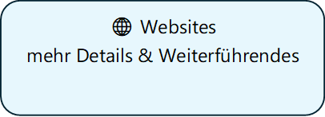

Ressourcen zu KI-Veranstaltungen von Franz Jankowski
|
Schnellstart |
||
|
Vertiefen
|
Inspiration
|
|
|
Auf dieser Seite |
||
|
→
Aufbau der
KI-Sessions |
||
Aufbau
Über viele Jahre gehörten Präsentationen, Moderationen, Info-Veranstaltungen und Workshops in der IT zu meinem Berufsalltag. Diese Erfahrung nutze ich heute, um Menschen den Einstieg in KI-Werkzeuge zu erleichtern und ihnen praxisnah zu zeigen, welche neuen Möglichkeiten sich eröffnen können.
Ich möchte Anstöße zur Weiterentwicklung geben, einen reflektierten und verantwortungsvollen Umgang mit KI fördern und vielleicht einen kleinen Unterschied machen, indem mehr Menschen diese Werkzeuge selbstbewusst nutzen. Die Vorbereitung ist durchaus aufwändig – aber der Aufwand lohnt sich: Ich freue mich am Austausch, an den Aha-Momenten der Teilnehmenden und daran, selbst geistig wach und herausgefordert zu bleiben.
Wie ich dieses Engagement weiterentwickle, werde ich von Zeit zu Zeit neu bewerten.

Ein praxisorientierter Leitfaden - Präsentation aus ausgewählten Inhalten dieser Websites, erstellt mit NotebookLM:
Falls die Ansicht nicht erscheint, klicken Sie hier, um die PDF zu öffnen oder herunterzuladen: PDF öffnen
(mehr zu NotebookLM finden Sie unter Recherche & Lernen)
© Franz Jankowski 2025. Alle Rechte vorbehalten.
Diese Unterlagen sind urheberrechtlich geschützt und ausschließlich für den persönlichen, nicht-kommerziellen Gebrauch bestimmt. Jegliche Vervielfältigung oder Weitergabe von Kopien der Inhalte sowie jede kommerzielle Nutzung – ganz oder teilweise – bedürfen meiner vorherigen schriftlichen Zustimmung. Gesetzliche Schranken (z. B. Zitatrecht) bleiben unberührt. Das bloße Verlinken auf diese Seite ist erlaubt.
Zur KI-Transparenz siehe hier.
Version: v1 – Stand: 18.12.2025. Testversionen hier (experimentell, pre-final, etc.).